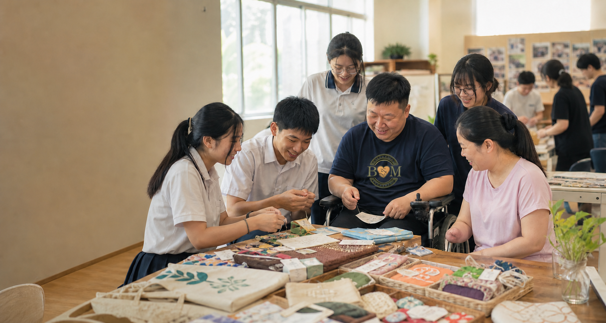

Community inclusion through creativity
Bridge Makers
Building bridges between students and disability communities through creativity, storytelling, and action.
Our Mission
We bring students, NGO partners, and local communities together to support disability communities.
How support flows
Small projects can become meaningful participation.
Connect
Students meet communities through NGOs, workshops, and respectful project planning.
Create
Groups collaborate on handmade products, interviews, photography, and storytelling.
Share
Products and stories help more people understand disability communities with dignity.
Get involved
Help turn creativity into connection.
Volunteer, contribute handmade products, join interviews, or partner with Bridge Makers from your own school or another school to support disability communities with respect and action.
Contact us
Interested in getting involved?
Email us to volunteer, contribute a project, connect your school, or discuss an NGO partnership.
bridgemakers@126.com